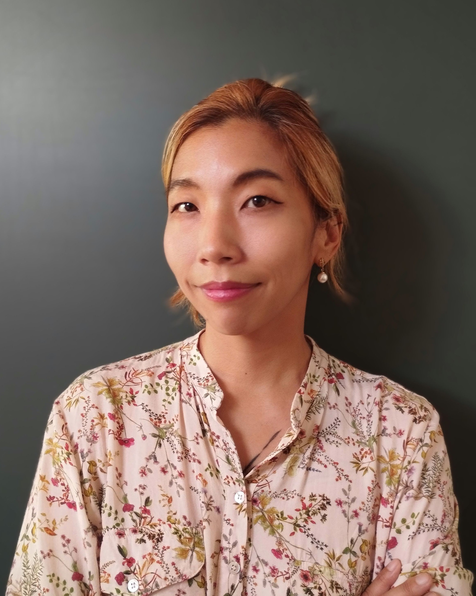

Practical Philosophy | Metaethics | Philosophy of Language | Normative Ethics | Philosophy of AI
I am a philosopher working in practical philosophy, with research interests in metaethics, philosophy of language, normative ethics, and philosophy of artificial intelligence. I received my PhD in Practical Philosophy from Lund University in October 2025. My dissertation, How to Guide with Words: Moral Advice as a Speech Act, examines moral advice as a distinctive form of normative communication.
My research asks how words guide action, how normative address succeeds or fails, and how speakers and hearers negotiate the standing to advise, criticise, demand, forgive, blame, or otherwise address one another normatively.
I am especially interested in cases where standing is misattributed: cases in which speakers take themselves to have standing they lack, hearers confer standing where it is not warranted, or both parties treat a normative address as authorised when it is not. This work connects metaethics, speech act theory, feminist philosophy of language, social epistemology, and debates about moral responsibility.
I have taught and co-taught undergraduate and master’s-level courses at Lund University, including One World One Morality, Contractualism, Fitting Attitudes and Value, and a master’s seminar in Conservation Biology on the intrinsic value of biodiversity. I have also tutored final-year philosophy students on thesis writing.
Email: jiwon[dot]kim[at]fil.lu.se
This website is under construction.